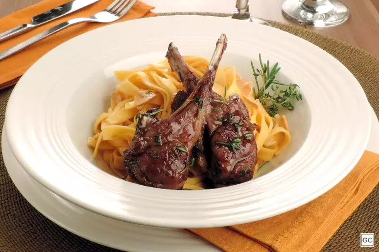
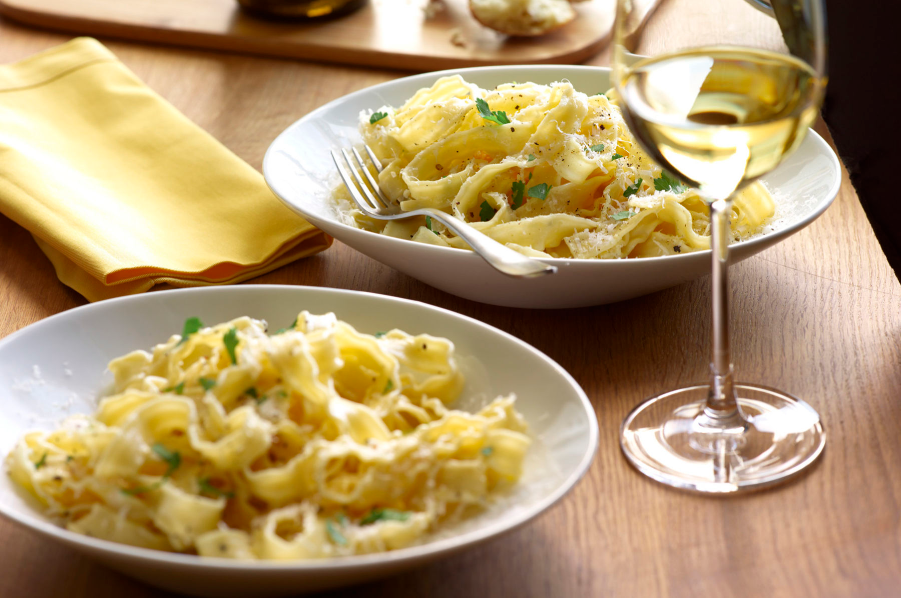

Também conhecido como vinho de mesa, o vinho tinto seco é caracterizado por ter no máximo 5 gramas de açúcar por litro, considerada um baixo percentual em sua composição. Embora muitas pessoas associem o vinho tinto seco a uma maior qualidade, a única diferença entre ele e outros tipos de vinho é justamente essa quantidade de açúcar.
TINTOS LEVES:
Carnes vermelhas grelhadas ou assadas, como filé mignon e costelas;
Frango assado ou cozido;
Pizza, especialmente as mais simples, com poucos ingredientes;
Bacalhau e outros peixes de sabor suave;
Molhos leves, como o sugo e o pesto;
Risotos simples, como o de funghi e o de queijo;
Queijos não curados, como o brie e o camembert.
TINTOS ENCORPADOS:
Carnes assadas, como cordeiro e javali;
Queijos curados e de pasta dura, como o parmesão e o grana padano;
Carnes de caça, como o pato e o javali;
Comidas bem condimentadas e temperadas, como o chili e o curry.
QUEIJOS CREMOSO:
Pratos com sabores mais adocicados, como sobremesas à base de chocolate e frutas vermelhas;
Carnes maior teor de gordura, como picanha, fraldinha, acém, contrafilé;
Alimentos mais ricos em amido, como massas e risotos;
Devem ser evitados com pratos muito picantes, como o curry e a pimenta.

Vinho Branco
Os vinhos brancos são extremamente versáteis e podem ser harmonizados com uma grande variedade de pratos. Mas algumas sugestões são praticamente um consenso entre apreciadores. Independentemente do prato escolhido, é importante levar em consideração a acidez do vinho branco, que pode ajudar a equilibrar sabores mais gordurosos e pesados.
Peixes e frutos do mar: tanto os mais jovens e frutados quanto os encorpados e espumantes, são excelentes companhias para peixes e frutos do mar. Pratos mais leves, como peixe grelhado e saladas de frutos do mar, combinam bem com vinhos brancos igualmente leves. Já os pratos mais acentuados, como peixes defumados e bacalhau, harmonizam melhor com vinhos brancos mais encorpados e complexos;
Pizzas e massas: os vinhos brancos também podem ser uma boa escolha para acompanhar pizzas e massas. Especialmente aquelas com molhos à base de queijo, manteiga ou azeite. Alguns exemplos são a pizza margherita e o macarrão com molho branco;
Saladas: as saladas são uma ótima opção para harmonizar com vinhos brancos, especialmente aquelas com ingredientes mais leves e frescos, como folhas verdes, tomates e frutas cítricas;
Queijos: alguns queijos, como o brie e o camembert, combinam muito bem com vinhos brancos, especialmente aqueles mais encorpados e complexos;
Culinária asiática: os vinhos brancos também podem ser uma boa opção para harmonizar com pratos asiáticos, como sushi, tempurá e até mesmo o frango xadrez.

Vinho Seco
Os vinhos seco são uma excelente opção para quem procura um vinho versátil e refrescante. Está entre os brancos maduros e os tintos leves e devem ser consumidos em baixa temperatura, entre 8 e 12 graus Celsius, para manter seu frescor e sabor característicos. É um vinho produzido a partir de uvas tintas, mas sua cor é obtida por meio de um processo de maceração mais curto do que o utilizado na produção dos vinhos tintos.
Saladas: os vinhos rosés combinam muito bem com saladas, especialmente aquelas com ingredientes mais leves e frescos, como folhas verdes, tomates e frutas cítricas.
Entradas: são uma ótima opção para acompanhar entradas, como patês, terrines e bruschettas.
Charcutaria: harmonizam muito bem com charcutaria, como presunto cru, salame e chorizo.
Frutos do mar: são excelentes companhias para frutos do mar, especialmente os mais leves, como camarão, lagosta e ostras.
Comida mediterrânea: rosés combinam muito bem com pratos da culinária mediterrânea, como saladas de tomate e manjericão, ratatouille e couscous.